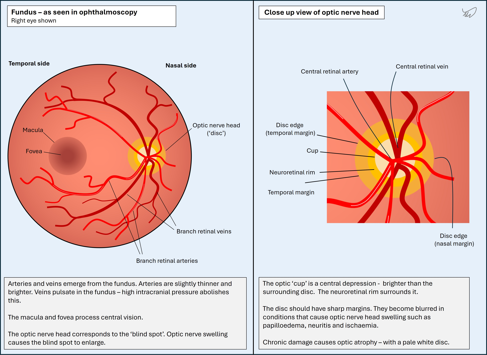
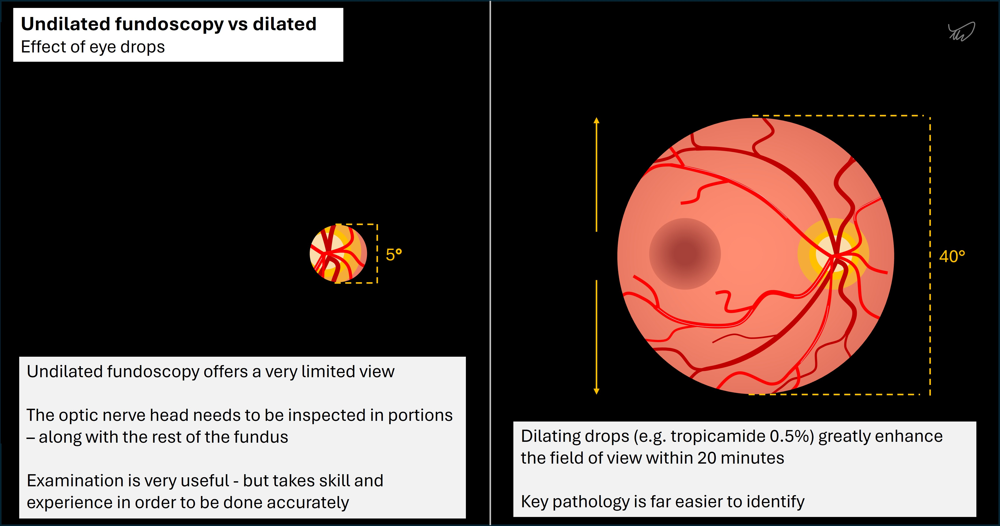
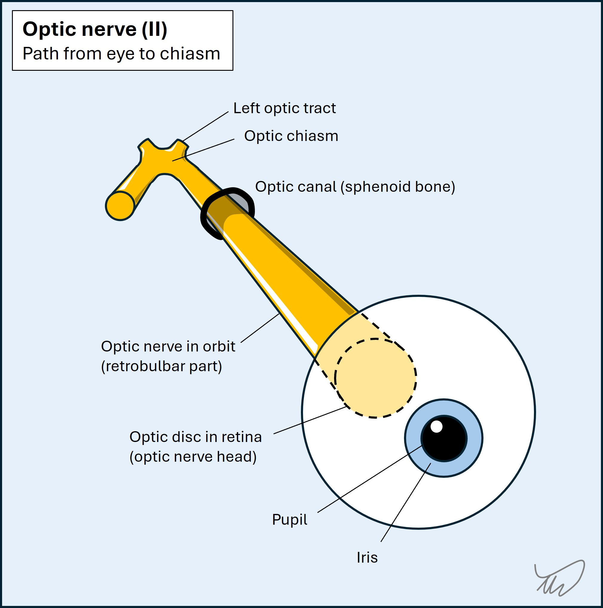
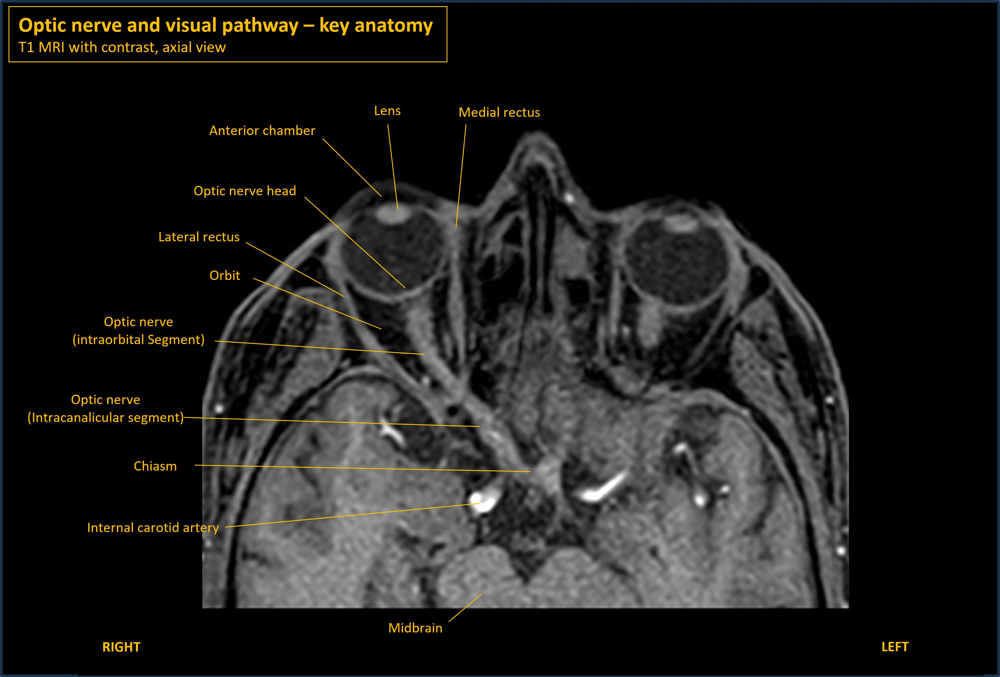

Painful visual loss
Where is the lesion?
The patient has monocular visual loss, which is severe. It is accompanied by a swollen optic disc and problems with the pupil reacting to light. It still reacts - but when the light is swung between each eye, there is a delay in its ability to react. We will return to that.
Monocular visual loss has many causes, listed in the BOX.
Keratitis and ulcer - physical damage to the external eye, usually painful and with redness
Retinal artery occlusion - sudden-onset complete (central retinal artery occlusion, CRAO) or partial (branch, BRAO) visual loss, typically painless. Amaurosis fugax is the transient form.
Retinal vein occlusion - similar symptoms to artery occlusion but different features on examining the retina (congestion and haemorrhage)
Glaucoma - blocked fluid drainage from the eye leading to high pressure, redness, pain and pupillary changes.
Retinal detachment - a characteristic 'shower' of sparks and floaters is followed by visual loss
Vitreous haemorrhage - spontaneous bleeding into the fluid in the eye, typically painless
Uveitis - infection/inflammation in the iris, ciliary body or choroid causing pain, redness and blurring
Ischaemic optic neuropathy - microvascular infarction of the optic nerve. Can be arteritic (with GCA) or non-arteritic (microvascular, associated with factors such as diabetes and hypertension).
Optic neuritis - progressive visual loss over days, usually to a mild-moderate extent but sometimes blinding, with many causes
Compression - a mass lesion (any type) can cause rapid visual loss
Toxic - certain toxins can damage the optic nerve
Papilloedema - typically bilateral but occasionally asymmetrical. High CSF pressure transmits against the optic nerve causing an enlarged blind spot and altered fields. If severe there is loss of central vision.
Leber's hereditary optic neuropathy - subacute, painless, severe and irreversible visual loss in both eyes due to a genetic mutation
They are all due to a problem either in the eye itself, or the optic nerve ahead of the chiasm. Everything further back causes binocular problems restricted to part or all of a hemifield, unless there are bilateral lesions, in which case the problem is binocular but in both hemifields - for example bilateral occipital damage causing cortical blindness. A problem affecting only one eye means a problem anterior to the chiasm (pre-chiasmatic). Here we are looking for an eye or optic nerve problem.
Each of the causes of monocular visual loss has associated features such as pain, redness, pupillary changes, and abnormalities in the retina or nerve, allowing clinical diagnosis. I am not an ophthalmologist and have limited experience in assessing monocular visual loss.
However, every clinician should be able to do a simple eye assessment to gain an idea of the problem before calling for help. There is a lot we can tell with simple clinical skills. We should be able to recognise signs suggesting a variety of 'eye' causes of visual loss as well as 'neurological' ones. This is also true when we see patients with headaches, which can be due to eye pathology (for example glaucoma or uveitis).
Some signs we might identify include:
Finding any of these helps us get an idea of the problem and have a more informed discussion with ophthalmologists, who can then take things further.
This patient's eye is not red. The pupil size is normal, and the retina is normal - although the fundus is not.
There are several features here that point to a cause - evident on the history and the simple examination performed.
Firstly, he has a vague headache in the left temple, which isn't specific to any cause.
However, he has pain on eye movement. This can be seen with optic neuritis, as the nerve is inflamed, and stretching it by eyeball rotation causes discomfort. Optic neuritis often features some pain, which is often vaguely located around the forehead and temple, rather than being neatly localised 'behind the eye'.
This isn't diagnostic by any means - various causes of unilateral visual loss also feature headache - but it is a clue.
The cones in the eyes - special photoreceptors - are centred in the fovea and enable colour vision. Fibres then carry this back through the optic nerve to the brain.
There are formal ways to test colour vision, but we usually don't have access to these in neurology. Instead, get creative - find pictures in a magazine, or search Google images for different solid colours and test if the patient can name them. Make sure to test the impaired eye first - often when they switch eyes they are surprised to see what the colours actually were.
Colour vision can be affected by lesions at various points in the visual pathway. The site determines whether colour vision is altered in one or both eyes, and one or both hemifields.
For example some drugs (e.g. digoxin) alter colour vision, but in both eyes. Brain lesions in the fusiform gyrus of the temporal lobe can affect colour vision by affecting higher-order visual processing (part of the 'ventral stream' - which assigns meaning to things we see) - but only in the contralateral hemifield of both eyes.
This patient has monocular dyschromatopsia. This is often seen with optic nerve pathology, i.e. optic neuropathy. It's particularly characteristic of inflammatory optic neuropathy, i.e. optic neuritis, where it is disproportionate in many cases to the actual visual acuity loss, and people complain of things appearing 'washed out' or looking 'grey' in the affected eye. However, non-inflammatory optic neuropathies, including ischaemic, toxic, and compressive causes, can also feature dyschromatopsia, and it can sometimes be seen in other eye diseases - so it is not absolutely specific to optic neuritis.
Of note, Köllner's rule is that optic nerve disease (e.g. neuritis) causes red-green deficiencies, while retinal or macular disease causes blue-yellow deficiencies. This is often quoted, although the large Optic Neuritis Treatment Trial (ONTT) suggested that it isn't 100% robust - many optic neuritis patients had blue-yellow disturbance.
We can directly visualise the optic nerve through ophthalmoscopy - i.e. fundoscopy. This is very useful. It's the only part of the central nervous system (CNS) we can look at - the optic nerve is technically part of the CNS, unlike other cranial nerves which are classed as 'peripheral'. It uses oligodendrocytes for myelin rather than Schwann cells, and is surrounded by cerebrospinal fluid and a dural sheath (see later).
The major change we can look for is swelling - an important clue in situations such as visual loss as well as headache.
Fundoscopy is also an opportunity to look at the rest of the fundus, too - the retina may show clues to causes of visual loss (e.g. pallor in arterial occlusion).

Visualising the fundus is difficult - the pupil reacts to light from the fundoscope. Testing in the dark may help, but reactivity tends to still limit this. Fundoscopy is much easier when dilating eye drops (such as tropicamide) are used. Undilated fundoscopy is a great skill - but it takes practice to get good at it.

Fundoscopy is also very useful in assessing for raised intracranial pressure (ICP), which causes papilloedema - optic disc swelling due to raised ICP (nearly always bilateral). The optic nerve head functions as a helpful 'pressure gauge' for the cerebrospinal fluid (CSF). This is because the nerve is still contained within the dura and arachnoid mater, with CSF surrounding it - which is different from all the other cranial nerves outside of the cranial cavity, which exit the CSF space on their way to their targets. High ICP transmits directly onto the optic nerve head, which is visible as swelling.
In our patient, there is swelling of the optic disc on one side. This is concerning for optic nerve pathology (i.e. optic neuropathy), affecting the more anterior segment of the nerve. Optic nerve pathology can also feature a normal optic nerve head when the pathology is behind the eye - retrobulbar optic neuropathy. This can be easily missed - 'the patient sees nothing, nor does the doctor'.
Before going further, let's review the pupillary light reflex.
The pupillary light reflexEach eye takes light stimulus from both hemifields. In contrast to the visual pathway, the pupillary light reflex does not involve the lateral geniculate nucleus (LGN) in the thalamus or the projections to the cortex- the afferent signals are relayed to the midbrain, then the efferent projections are carried out in the oculomotor nerves (III) bilaterally.
If the left eye alone receives light from the right (nasal) field, it travels to the left midbrain - the neuron sends a branch proximal to the LGN. Then it reaches the left pretectal nucleus in the dorsal midbrain. This is in the superior (rostral) part, level with the superior colliculi. The pretectal nucleus then projects bilateral interneurons to both Edinger-Westphal nuclei - subgroups of the oculomotor nucleus complex. These then each project parasympathetic preganglionic neurons via III to the ciliary ganglion. The final neuron - a postganglionic parasympathetic one - travels in the short ciliary nerve to the pupil, constricting both.
The pretectal interneurons enable bilateral projection in this reflex, so there is a direct (same eye) and consensual (other eye) part. Of course, if light is shone into both hemifields with the pen torch held directly ahead, then the temporal field signal is carried across the optic chiasm to the opposite (right) pretectal area, adding an additional crossing. In practice, this is usually what we are doing when we test this reflex.
Pupillary light reflex in optic nerve disease - afferent pupillary defectsIn optic nerve disease there is no anisocoria - the efferent part of the light reflex still works to both eyes, so even if afferent input is altered or totally lost on one side, the other eye still sends consensual signals to the affected eye via the oculomotor nerve (III). Hence, whether in bright or dark conditions, the pupils stay equally sized - the other eye is reacting appropriately to ambient conditions, sending signals to each eye. This is different to efferent pupillary defects due to problems such as III palsy or Adie's tonic pupil (postganglionic parasympathetic neuron dysfunction) - in which the affected eye loses its ability to constrict and becomes mydriatic.
Instead, the key abnormality in optic nerve disease is seen in both eyes when testing the direct reflex.
In a complete lesion of the optic nerve, the pupil would not react to light shone in it at all (i.e. the direct reflect is completely lost). This is a total afferent pupillary defect. This does sometimes happen - but many causes of optic neuropathy are only partial, causing a relative afferent pupillary defect (RAPD), and the abnormality is more subtle, requiring careful testing.
To see this partial impairment, we need to assess how the eyes' reactivity levels balance against each other in alternating light-dark conditions. The key is only having one eye at a time receiving light stimulus - the other is in the dark. We test this in the dark - in bright ambient conditions there is so much background light that the intact eye will transmit this to the reflex system and hence constrict both pupils. Doing this in the dark leads to pupils dilating, making it easier to perceive abnormalities in reactivity.
The test we do is called the swinging flashlight test.
For this example we will demonstrate a left eye RAPD - as in our patient.
The appearance of a dilating pupil with a light shone in it is very characteristic and easily recognised once the examiner is familiar with the test.
The milder the RAPD, the less the eye dilates when light is shone in it.
In some cases the issue is not an absolute loss of a degree of reactivity - i.e. the issue is not that the pupil can react but only partially. The issue instead is slowing (due to myelin damage) of the afferent signal in the affected nerve. This can lead to a characteristic reaction - when the light is swapped from the intact eye to the affected one, the pupils both initially dilate - then constrict as the light reflex 'catches up'.
RAPD is a sign of optic neuropathy and can be seen in a variety of causes, which we'll review in the next section.
We know this is an optic neuropathy from the clinical features (monocular visual loss with dyschromatopsia) and the key signs - disc swelling and RAPD. In addition, we haven't seen features of an alternative cause of visual loss.
We can't really localise this easily to a given point in the nerve - it is long and has no branches. All we know is that the problem is anterior to the chiasm, otherwise we'd not have a monocular problem affecting both hemifields.
The optic nerve runs posteriorly from the retina through the orbit, taking an angled path towards the midline - then passes through the optic canal in the sphenoid bone, then travels backwards and joins the optic chiasm. These segments are intraoptic, intraorbital, intracanalicular and intracranial respectively. It is about 4cm long; the intraorbital part is longest at about 3cm.

The MRI below shows the anatomy.

The only localising clues come via cross-localisation with other signs if present; these might suggest co-involvement of other nerves, for example orbital apex syndrome, which also involves oculomotor (III), trochlear (IV) and abducens (VI) nerves and the ophthalmic portion of the trigeminal nerve (V1). These are intact in this case.
The only other clue here is there is some visible change in the optic disc, so there is involvement of the more anterior portion of the nerve rather than a purely retrobulbar variant, which would feature a normal disc. We wouldn't expect this with pathology further back unless there is a longitudinally-extensive nerve lesion.
The patient has severe monocular visual loss, dyschromatopsia, pain on eye movement, a swollen optic disc, and an RAPD - the problem is left optic neuropathy. We know the more anterior portions are probably involved - so there is at least some orbital involvement, though it might travel further back as well. We also know no other structures are affected; this is a lone optic nerve problem.
What is the lesion?